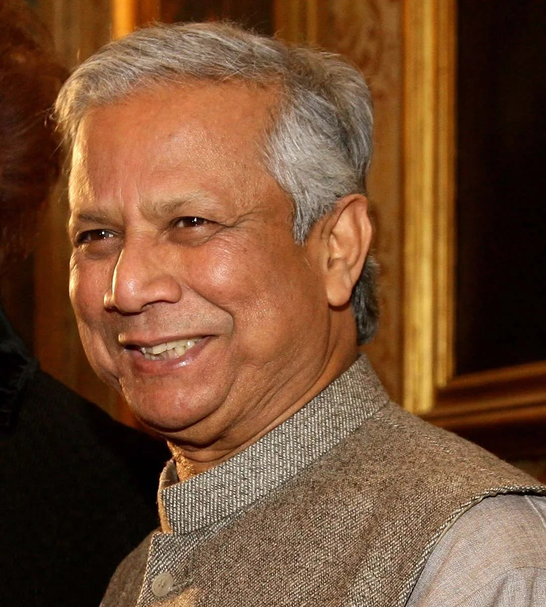

ড. মুহাম্মদ ইউনূস
জীবনী

পরিবার এবং শৈশব
মুহাম্মদ ইউনুস ১৯৪০ সালের ২৮শে জুন ব্রিটিশ ভারতের বাংলা প্রেসিডেন্সির (বর্তমান বাংলাদেশ) চট্টগ্রামের হাটহাজারী উপজেলার শিকারপুর ইউনিয়নের[১৪] বাথুয়া গ্রামে একটি বাঙালি মুসলিম পরিবারে জন্মগ্রহণ করেন।[১৫][১৬] নয় ভাইবোনের মধ্যে তিনি তৃতীয়।[১৭] তাঁর পিতা হাজী দুলা মিয়া সওদাগর ছিলেন একজন জহুরি, এবং তাঁর মাতা সুফিয়া খাতুন। তার শৈশব কাটে গ্রামে। ১৯৪৪ সালে তার পরিবার চট্টগ্রাম শহরে চলে আসে এবং তিনি তার গ্রামের স্কুল থেকে লামাবাজার প্রাথমিক বিদ্যালয়ে চলে যান।[১৫][১৮] ১৯৪৯ সালের দিকে তার মা মানসিক অসুস্থতায় ভুগতে শুরু করেন। পরবর্তীতে তিনি চট্টগ্রাম কলেজিয়েট স্কুল থেকে মেট্রিকুলেশন পরীক্ষায় উত্তীর্ণ হন এবং পূর্ব পাকিস্তানের ৩৯ হাজার ছাত্রের মধ্যে ১৬তম স্থান অধিকার করেন।[১৮]
বিদ্যালয় জীবনে তিনি একজন সক্রিয় বয় স্কাউট ছিলেন এবং ১৯৫২ সালে পশ্চিম পাকিস্তান ও ভারত এবং ১৯৫৫ সালে কানাডায় জাম্বোরিতে অংশগ্রহণ করেন। পরে, যখন ইউনুস চট্টগ্রাম কলেজে পড়াশোনা করছিলেন, তখন তিনি সাংস্কৃতিক কর্মকাণ্ডে সক্রিয় হন এবং নাটকের জন্য পুরস্কার জিতেন।[১৮] ১৯৫৭ সালে তিনি ঢাকা বিশ্ববিদ্যালয়ের অর্থনীতি বিভাগে ভর্তি হন এবং ১৯৬০ সালে বিএ এবং ১৯৬১ সালে এমএ সম্পন্ন করেন।
স্নাতকের পর
স্নাতক শেষ করার পর তিনি নুরুল ইসলাম এবং রেহমান সোবহানের অর্থনৈতিক গবেষণায় গবেষণা সহকারী হিসেবে অর্থনীতি ব্যুরোতে যোগ দেন।[১৮] পরবর্তীতে তিনি ১৯৬১ সালে চট্টগ্রাম কলেজে অর্থনীতির প্রভাষক হিসেবে নিয়োগ পান।[১৮] একই সময়ে তিনি পাশাপাশি একটি লাভজনক প্যাকেজিং কারখানা স্থাপন করেন।[১৬] ১৯৬৫ সালে তিনি মার্কিন যুক্তরাষ্ট্রে পড়াশোনার জন্য ফুলব্রাইট স্কলারশিপ লাভ করেন। ১৯৭১ সালে ভ্যান্ডারবিল্ট বিশ্ববিদ্যালয়ের গ্র্যাজুয়েট প্রোগ্রাম ইন ইকোনমিক ডেভেলপমেন্ট (GPED) থেকে অর্থনীতিতে পিএইচডি ডিগ্রি অর্জন করেন তিনি।[১৯][২০] ১৯৬৯ থেকে ১৯৭২ সাল পর্যন্ত, ইউনুস মার্ফ্রিসবোরোতে মিডল টেনেসি স্টেট ইউনিভার্সিটিতে অর্থনীতির সহকারী অধ্যাপক ছিলেন।
১৯৭১ সালে বাংলাদেশের মুক্তিযুদ্ধের সময় তিনি একটি নাগরিক কমিটি প্রতিষ্ঠা করেন এবং অন্যান্য বাংলাদেশিদের সাথে যুক্তরাষ্ট্রে মুক্তিযুদ্ধের জন্য সমর্থন সংগ্রহ করতে বাংলাদেশ ইনফরমেশন সেন্টার পরিচালনা করেন।[১৮] তিনি ন্যাশভিলের তার বাড়ি থেকে 'বাংলাদেশ নিউজলেটারও' প্রকাশ করতেন। যুদ্ধ শেষ হলে তিনি বাংলাদেশে ফিরে আসেন এবং নুরুল ইসলামের নেতৃত্বে সরকারের পরিকল্পনা কমিশনে নিযুক্ত হন। তবে কাজটি তার কাছে একঘেয়ে লাগায় তিনি সেখানে ইস্তফা দিয়ে[২১] চট্টগ্রাম বিশ্ববিদ্যালয়ে অর্থনীতি বিভাগে সহযোগী অধ্যাপক হিসেবে যোগ দেন এবং বিভাগের প্রধান হিসেবে দায়িত্ব পালন করেন। ১৯৭৫ সালে তিনি অধ্যাপক পদে উন্নীত হন এবং ১৯৮৯ সাল পর্যন্ত এ পদে কর্মরত ছিলেন।[২২]
স্বীকৃতি
ইউনুস এবং গ্রামীণ ব্যাংককে অর্থনৈতিক এবং সামাজিক উন্নয়নের প্রচেষ্টার জন্য ২০০৬ সালের শান্তিতে নোবেল পুরস্কার প্রদান করা হয়েছিল:
"মুহাম্মদ ইউনুস নিজেকে এমন একজন নেতা হিসাবে প্রমাণ করেছেন যিনি লক্ষ লক্ষ মানুষের কল্যাণের জন্য দৃষ্টিভঙ্গিকে বাস্তবিক পদক্ষেপে রূপান্তর করতে সক্ষম হয়েছেন, শুধু বাংলাদেশেই নয় বরং অন্যান্য অনেক দেশেও। আর্থিক নিরাপত্তা ছাড়াই দরিদ্র মানুষদের ঋণ দেওয়া অসম্ভব ধারণা মনে হয়েছিল। তিন দশক আগে বিনয়ী সূচনা থেকে, ইউনুস, প্রধানত গ্রামীণ ব্যাংকের মাধ্যমে, ক্ষুদ্রঋণকে দারিদ্র্যের বিরুদ্ধে সংগ্রামে একটি ক্রমবর্ধমান গুরুত্বপূর্ণ হাতিয়ারে পরিণত করেছেন।"
তিনি প্রথম বাংলাদেশি হিসেবে নোবেল পুরস্কার পান। গুরুত্বপূর্ণ পুরস্কারের খবর পাওয়ার পর, ইউনুস ঘোষণা করেন যে তিনি ১৪ লক্ষ (২০২৪ সালে প্রায় ২১ লক্ষের সমতুল্য) পুরস্কার অর্থের একটি অংশ ব্যবহার করে দরিদ্রদের জন্য কম খরচে, উচ্চ পুষ্টির খাবার তৈরির জন্য একটি কোম্পানি গড়ে তুলবেন; বাকিটা তার নিজ জেলা চট্টগ্রামে ইউনুস বিজ্ঞান ও প্রযুক্তি বিশ্ববিদ্যালয় স্থাপন এবং বাংলাদেশে দরিদ্রদের জন্য একটি চক্ষু হাসপাতাল প্রতিষ্ঠার জন্য ব্যবহার করবেন।[৪০]
প্রাক্তন মার্কিন প্রেসিডেন্ট বিল ক্লিনটন ইউনুসকে নোবেল পুরস্কার দেওয়ার পক্ষে জোরালো সমর্থন প্রদান করেন। তিনি রোলিং স্টোন ম্যাগাজিনে[৪১] এবং তার আত্মজীবনী মাই লাইফ-এ এই বিষয়ে লিখেন।[৪২] ২০০২ সালে ক্যালিফোর্নিয়া বিশ্ববিদ্যালয়, বার্কলিতে দেওয়া একটি ভাষণে, প্রেসিডেন্ট ক্লিনটন ইউনুসকে এভাবে বর্ণনা করেন যে, "একজন ব্যক্তি হিসেবে যার অনেক আগেই নোবেল পুরস্কার [অর্থনীতিতে] পাওয়া উচিত ছিল এবং আমি এই কথা বলতেই থাকব যতক্ষণ না তারা অবশেষে তাকে এটি দেয়া হয়।"[৪৩] অপরদিকে, দি ইকোনমিস্ট স্পষ্টভাবে উল্লেখ করে যে, যদিও ইউনুস দারিদ্র্যের বিরুদ্ধে চমৎকার কাজ করছেন, এটা তাকে শান্তি পুরস্কার দেওয়ার জন্য যথাযথ নয়, উল্লেখ করে: "... নোবেল কমিটি আরও সাহসী এবং কঠিন সিদ্ধান্ত নিতে পারত যদি তারা ঘোষণা করত যে এবার কোনো পুরস্কারপ্রাপ্ত নেই।"[৪৪]
রাজনৈতিক কার্যকলাপ
২০০৬ সালের শুরুর দিকে, ইউনুস এবং নাগরিক সমাজের অন্যান্য সদস্যরা যেমন রেহমান সোবহান, মুহাম্মদ হাবিবুর রহমান, কামাল হোসেন, মতিউর রহমান, মাহফুজ আনাম এবং দেবপ্রিয় ভট্টাচার্য, সৎ এবং পরিচ্ছন্ন প্রার্থীদের সমর্থনে একটি প্রচারে অংশ নেন।[৪৫] সেই বছরের শেষের দিকে তিনি রাজনীতিতে প্রবেশ করার কথা বিবেচনা করেন।[৪৬] ২০০৭ সালের ১১ ফেব্রুয়ারি ইউনুস একটি খোলা চিঠি লিখেন, যা বাংলাদেশি সংবাদপত্র 'ডেইলি স্টার'-এ প্রকাশিত হয়। তিনি নাগরিকদের তাঁর পরিকল্পনা সম্পর্কে মতামত চেয়ে একটি রাজনৈতিক দল প্রতিষ্ঠার কথা বলেন, যার উদ্দেশ্য রাজনৈতিক সদিচ্ছা, সঠিক নেতৃত্ব এবং সুশাসন প্রতিষ্ঠা করা। চিঠিতে তিনি সবাইকে সংক্ষেপে লিখতে বলেন যে তিনি কীভাবে এই কাজটি করবেন এবং তারা কিভাবে এতে অবদান রাখতে পারেন।[৪৭] অবশেষে ইউনুস ঘোষণা করেন যে তিনি ১৮ ফেব্রুয়ারি ২০০৭ সালে নাগরিক শক্তি নামক একটি রাজনৈতিক দল গঠন করতে ইচ্ছুক।[৪৮][৪৯] সে সময়ে জনশ্রুতি ছিল যে, সেনাবাহিনী তাকে রাজনীতিতে আসার জন্য সমর্থন করেছিল।[৫০] তবে ৩ মে ইউনুস অন্তর্বর্তী সরকারের প্রধান ফখরুদ্দিন আহমেদের সাথে সাক্ষাতের পর তিনি তাঁর রাজনৈতিক পরিকল্পনা পরিত্যাগের ঘোষণা দেন।[৫১]
২০০৭ সালের জুলাইয়ে দক্ষিণ আফ্রিকার জোহানেসবার্গে, নেলসন ম্যান্ডেলা, গ্রাসা মাচেল এবং ডেসমন্ড টুটু বিশ্ব নেতাদের সমন্বিত একটি গ্রুপ করেন। তাদের উদ্দেশ্য ছিল বিশ্বব্যাপী কঠিন সমস্যাগুলো সমাধানের জন্য তাদের প্রজ্ঞা, স্বাধীন নেতৃত্ব এবং সততার মাধ্যমে অবদান রাখা।[৫২] নেলসন ম্যান্ডেলা তাঁর ৮৯তম জন্মদিনের উপলক্ষে প্রদত্ত ভাষণে এই নতুন গ্রুপ 'দ্য এল্ডার্স' প্রতিষ্ঠার ঘোষণা দেন।[৫৩] ইউনুস এই গ্রুপের উদ্বোধনী অনুষ্ঠানে অংশ নেন এবং এর অন্যতম প্রতিষ্ঠাতা সদস্য ছিলেন। ২০০৯ সালের সেপ্টেম্বরে তিনি এল্ডার পদ থেকে পদত্যাগ করেন, তাঁর কাজের ব্যস্ততার কারণে সদস্যপদে যথাযথ অবদান রাখতে অক্ষম বলে উল্লেখ করেন।[৫৪]
তত্ত্বাবধায়ক সরকারের উপদেষ্টা
মুহাম্মদ ইউনূস ১৯৯৬ সালে সাবেক প্রধান বিচারপতি মুহাম্মদ হাবিবুর রহমানের নেতৃত্বে গঠিত তত্ত্বাবধায়ক সরকারের উপদেষ্টা হিসেবে দায়িত্ব পালন করেন। তিনি প্রাথমিক ও গণশিক্ষা মন্ত্রণালয়, বিজ্ঞান ও প্রযুক্তি মন্ত্রণালয় এবং পরিবেশ ও বন মন্ত্রণালয়ের দায়িত্বে ছিলেন।[৬১]
অন্তর্বর্তীকালীন সরকারের প্রধান
২০২৪ সালের ৫ই আগস্ট গণআন্দোলনের মুখে শেখ হাসিনার পদত্যাগের পর বাংলাদেশে রাজনৈতিক অচলাবস্থা তৈরি হয়।[৬২] এসময় বৈষম্যবিরোধী ছাত্র আন্দোলন মুহাম্মদ ইউনূসকে বাংলাদেশ সরকারের অন্তর্বর্তীকালীন সরকারের প্রধান হিসেবে প্রস্তাব করে।[৬৩] পরবর্তীতে রাষ্ট্রপতি মোহাম্মদ সাহাবুদ্দিন এতে সম্মতি জ্ঞাপন করেন এবং অন্তর্বর্তীকালীন সরকারের প্রধান উপদেষ্টা হিসেবে তাকে নিয়োগের সিদ্ধান্ত নেওয়া হয়।[৬৪] ৮ই আগস্ট ২০২৪ তিনি অন্তর্বর্তীকালীন সরকারের প্রধান উপদেষ্টা হিসেবে আনুষ্ঠানিকভাবে শপথ গ্রহণ করেন।[৬৫]
পটভূমি
অনেক বছর ধরে ইউনূস হাসিনার বাবা শেখ মুজিবের একজন অনুসারী ছিলেন।[১০৮] মিডল টেনেসি স্টেট ইউনিভার্সিটি-তে অধ্যাপনা করার সময়,[১০৯] ইউনূস বাংলাদেশের বিরুদ্ধে পশ্চিম পাকিস্তানের আগ্রাসনের প্রতিক্রিয়া হিসেবে বাংলাদেশ সিটিজেন্স কমিটি (বিসিসি) প্রতিষ্ঠা করেন।[১১০] মুক্তিযুদ্ধ শুরু হওয়ার পর, বিসিসি ইউনূসকে তাদের 'বাংলাদেশ নিউজ লেটার'-এর সম্পাদক হিসেবে নির্বাচিত করে।[১১১] ১৯৭১ সালে বাংলাদেশের স্বাধীনতায় অনুপ্রাণিত হয়ে ১৯৭২ সালে তিনি দেশে ফিরে আসেন। মুজিবের মৃত্যুর পরেও এই সম্পর্ক অব্যাহত থাকে। ইউনূস হাসিনার সাথে একটি পেশাদার সম্পর্ক বজায় রাখেন। ইউনূস হাসিনাকে মার্কিন ফার্স্টলেডী হিলারি ক্লিনটনের সাথে ১৯৯৭ সালে ২-৪ ফেব্রুয়ারি অনুষ্ঠিত একটি ক্ষুদ্রঋণ শীর্ষ সম্মেলনের সহ-সভাপতি হিসেবে নিযুক্ত করেন। উক্ত অনুষ্ঠানে ১৩৭টি দেশের ৫০ জন রাষ্ট্রপ্রধান এবং উচ্চ পর্যায়ের কর্মকর্তারা ওয়াশিংটন ডিসিতে দারিদ্র্যের সমাধান নিয়ে আলোচনা করতে সমবেত হন। এই অনুষ্ঠানে হাসিনা ইউনূসের প্রশংসা করেন। তিনি তার বক্তব্যে বলেন, "অধ্যাপক ইউনূস এবং তাঁর প্রতিষ্ঠিত গ্রামীণ ব্যাংকের অসাধারণ কাজ করছে, গ্রামীণ ব্যাংকের সাফল্য দরিদ্রদের ক্ষুদ্রঋণ প্রদানে নিয়োজিত ব্যাংকগুলির কার্যকারিতা সম্পর্কে আশাবাদ তৈরি করেছে"।[১১২] বাংলাদেশের সবচেয়ে বড় টেলিফোন সেবা প্রতিষ্ঠান গ্রামীণফোনের উদ্বোধনী অনুষ্ঠান ১৯৯৭ সালের ২৬ মার্চ হাসিনার অফিসে অনুষ্ঠিত হয়। গ্রামীণফোন ব্যবহার করে হাসিনা প্রথম কল করেন তৎকালীন নরওয়েজীয় প্রধানমন্ত্রী থরবিয়র্ন জ্যাগল্যান্ড-কে। তার কথোপকথন শেষ হলে তিনি আরেকটি কল পান, গ্রামীণফোনের এক কর্মচারী লায়লী বেগমের কাছ থেকে। তবে এই দীর্ঘ সম্পর্কের অবসান ঘটে ২০০৭ সালে, যখন ইউনূস একটি রাজনৈতিক দল নাগরিক শক্তি গঠনের ইচ্ছা প্রকাশ করেন।[১১৩]
সম্মাননা ও পুরস্কার
- ১৯৮৪ সালে রামোন ম্যাগসেসে পুরস্কার, ফিলিপাইন
- ১৯৮৭ সালে স্বাধীনতা পুরস্কার, বাংলাদেশ
- ১৯৯৮ সালে গ্রামীণ ব্যাংকের প্রতিষ্ঠাতা হিসেবে ইন্দিরা গান্ধী শান্তি পুরস্কার
- ২০০৪ সালে ফিলাডেলফিয়ার হোয়ার্টন স্কুল অব দ্য ইউনিভার্সিটি অব পেন্সিল্ভেনিয়া তাকে গত "২৫ বছরে ২৫ জন সবচেয়ে প্রভাবশালী ব্যবসায়িক ব্যক্তিদের মধ্যে একজন" হিসেবে নির্বাচন করে।
- ২০০৬ সালে তার অর্থনৈতিক কাজের জন্য নোবেল শান্তি পুরস্কার
- ২০০৬ সালে টাইম ম্যাগাজিন তাকে শীর্ষ ১২ জন ব্যবসায়িক নেতার মধ্যে স্থান দেয়, তাকে "এশিয়ার ৬০ বছরের নায়ক"দের মধ্যেও অন্তর্ভুক্ত করে
-
২০০৮ সালে ইউনুসকে যুক্তরাজ্যের 'প্রসপেক্ট ম্যাগাজিন' এবং যুক্তরাষ্ট্রের 'ফরেন পলিসি' কর্তৃক পরিচালিত একটি উন্মুক্ত অনলাইন জরিপে শীর্ষ ১০০ জন পাবলিক ইন্টেলেকচুয়ালদের মধ্যে দ্বিতীয় স্থান দেওয়া হয়।[
-
২০০৯ সালে ইউনুস স্লোভাকিয়ার ইনফরমাল ইকোনমিক ফোরাম ইকোনমিক ক্লাব দ্বারা প্রদত্ত সর্বোচ্চ পুরস্কার গোল্ডেন বিয়াটেক অ্যাওয়ার্ড পান। যারা স্লোভাক প্রজাতন্ত্রে অর্থনৈতিক, সামাজিক, বৈজ্ঞানিক, শিক্ষাগত এবং সাংস্কৃতিক কৃতিত্ব প্রদর্শন করে তাদের এটি দেয়া হয়।
- ২০২১ সালে ইউনুস ক্রীড়া (ইউনুস স্পোর্টস হাবের মাধ্যমে) উন্নয়নের জন্য তার বিস্তৃত কাজের জন্য অলিম্পিক লরেল পুরস্কার পান।[১
- ২০২১ সালে ইউনুসকে ইউনাইটেড নেশনস ফাউন্ডেশনের চ্যাম্পিয়ন অব গ্লোবাল চেঞ্জ পুরস্কার দেওয়া হয়। মানব মর্যাদা, সমতা এবং ন্যায়বিচার বৃদ্ধির জন্য তার আলোকিত নেতৃত্ব এবং উদ্ভাবনের স্বীকৃতিস্বরূপ তাকে এই পুরস্কার দেওয়া হয়।[